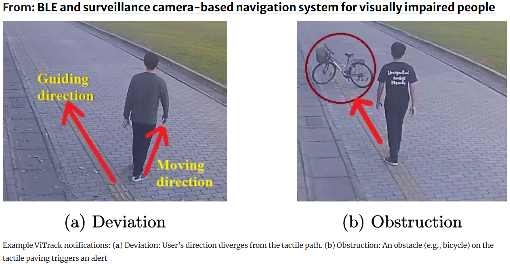
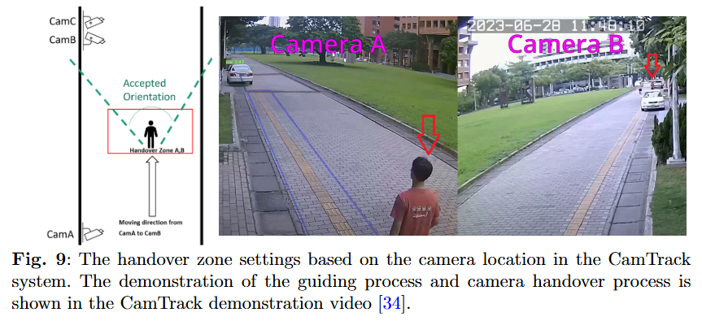

NCKU · Dept. of Electrical Engineering · Tainan, Taiwan
Assistive Navigation for Visually Impaired People via Multi-Sensor Fusion & Smart Camera Networks
Prof. Sok-Ian Sou 蘇淑茵
· National Cheng Kung University · sisou@mail.ncku.edu.tw
ViTrack · Multimedia Tools & Applications · vol.85, no.70 · Feb. 2026CamTrack · Neural Computing and Applications · accepted 2026
Paper
Demo Video
Demo Snapshots

Example ViTrack notifications: (a) Deviation — user's direction diverges from the tactile path; (b) Obstruction — a bicycle on the tactile paving triggers an alert.

Handover zone settings based on camera location in the CamTrack system. Camera A→B handover and the guiding process are shown in the demo video.
Student Achievements · 2023
Competition Recognition
Student teams supervised by Prof. Sou received awards at both national and international competitions.
2nd Place
鈺立微 AI視覺辨識及運算組
第28屆大專校院資訊應用服務創新競賽 2023 University Information Application Innovation Competition
黃湙珵 · 林耕澤 · 吳炯霖
Honorary Mention
Viclusion: A Vision-assisted Tracking & Guiding System for Visually Impaired People
2023 IEEE ComSoc Student Competition · IEEE Communications Society
黃暄閔 · 黃湙珵 · 林耕澤 · 吳炯霖
Motivation
The Navigation Challenge
2.2 billion people worldwide live with vision impairment. Traditional aids — white canes and tactile paving — are easily blocked by obstacles, while single-sensor electronic travel aids suffer signal interference or occlusion. Our research fuses existing surveillance infrastructure with smartphone sensors to deliver reliable, continuous, and unobtrusive guidance with no extra wearable hardware.
ViTrack fuses BLE wireless fingerprinting with existing surveillance cameras for privacy-preserving, user-controlled outdoor navigation. A DNN/LSTM network localizes the user via RSSI signals from low-cost sniffers, then hands off to YOLOv7 for visual tracking, deviation detection, and obstacle avoidance — all without extra hardware beyond the user's smartphone.
CamTrack advances ViTrack by adding IMU-derived trajectory prediction for proactive camera-to-camera handover. A Markov-chain probability model explicitly quantifies the cost–benefit trade-off between tracking reliability and camera resource usage, enabling informed system configuration rather than heuristic tuning.
System Architecture — Layered View
Sensor Layer
📐
IMU (Phone)
Yaw angle · velocity · heading estimation
+
📡
BLE Sniffers
RSSI coarse-grained localization across campus
+
📷
Camera Network
500+ cameras · 69 NVR servers · 1920×1080@20fps
Handover Layer
🧭
Yaw Mapping
IMU Yaw → T-sample directional verification · camera transition table
→
🔮
Predictive Camera Selection
Enters handover zone → activates next camera · deactivates current